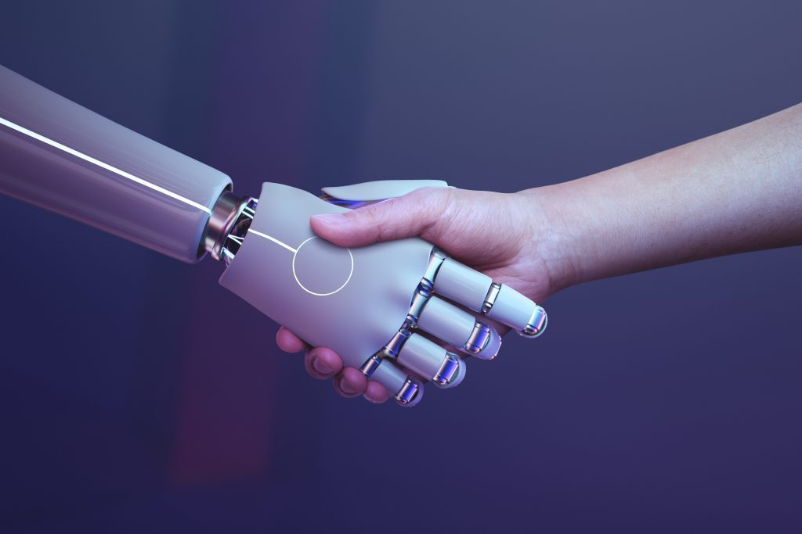

根據Gartner產業研究的問卷調查中，89%的企業認為客戶體驗是目前主要的競爭戰場。IDC 全球研調機構也提出報告，統計全球企業在2022年用於客戶體驗技術支出超過6000億美元，超過8成企業管理者認為良好的顧客體驗能有效驅動營收成長。
現今企業已經不能只關注眼前的銷售數字，重視「體驗」、「服務」並持續性提供良好的客戶體驗，提升品牌溢價效益，是各家企業持續關注的重點策略。然而對許多中小企業來說，即使知道客戶體驗的重要性，過去卻受限於資源，難以有效執行。現在隨著社群平台、行動裝置和演算法的成熟，中小企業有更方便、有效的客戶體驗提升方法。
應用科技改善顧客體驗，AI機器人輔助提升客戶滿意度
簡單、快速、便利已經成為現代消費者對店家基本的期待，根據全球卓越客戶體驗研究報告，73%的受訪消費者表示快速回覆是良好客戶體驗的關鍵。若單只依靠人力很難做到24小時即時回覆、快速解決消費者問題。中小企業不同於大型企業較容易招聘人才、拓展部門，因此很容易將客服人力多由行政或業務分擔，更難以把握接觸點改善顧客體驗。
現今隨著新形態對話式商務發展，許多消費者傾向先在線上進行服務諮詢。隨著社群平台與數位工具的成熟，自動回覆機器人結合社群、通訊平台，作為與消費者的第一線接觸點，智能AI機器人將會是中小企業提升顧客體驗的有效方式。
建立AI自動回覆機器人四步驟
- 找出「常見問題」
使用機器人輔助的一大目的是讓消費者可以在第一時間得到答案，找出消費者的常見問題，讓用戶在與機器人的對話中獲得解答，是第一步也是最快速有效提升顧客體驗的方法。
- 以消費者視角進行分類，建立答案按鈕選單
按鈕選單可以大幅減少消費者思考的負擔與時間，限制主題的方式，能讓大多數的消費者能簡易、快速的找到預期得到的答案。為減少消費者思考負擔與時間，按鈕選單適合用於有固定答案的問題，每個主題下不超過三個選項。
- 真人客服切入轉換流程設計
前述兩個步驟可因應答案固定的簡單問題，即時消費者解答。在消費者首次進行接觸時，需為其設定符合機器人功能的期待，並向消費者表明當前情況。因此當消費者提出機器人無法回答的問題時，在適當的時間轉換真人回覆，即使對於複雜的問題無法在第一時間解決，也能展現解決問題的能力與誠意，提供無縫且一致性的消費者體驗。
- 測試與優化調整
建立完成後，持續檢視與測試工作流程是否流暢；每一個與消費者的接觸點體驗是否一致；機器人引導消費者的方式是否簡單易懂，在發布機器人上線前後，都需要進行完善的測試。
人機協作，提供個人化消費者體驗
根據Impacto TIC統計，企業將高頻率、答案固定的問題交由機器人回覆，即可為8成以上的消費者提供即時、有效的問題解決服務，利用智能機器人提供快速即時的回應，能讓中小企業快速、有效的改善客戶體驗。
人機協作，提供個人化消費者體驗
為了提供消費者個人化體驗，從與消費者第一接觸點開始收集數據資料，是改善消費者體驗的最重要依據。AI機器人的用途並不僅止於問答，以數據為基礎的消費者資料洞察，能幫助中小企業分析消費者輪廓、意圖。智能AI機器人能將個人資訊細緻的分群。透過需求模式、對話歷史紀錄…等資訊設計規則，進行標籤分類，讓客服或社群編輯即可根據分類，應對消費者的詢問及需求。提供個人化的推薦或建議，提升消費者體驗。
受到市場環境劇變影響，促使企業需要提升自身的數位應變能力，即時台灣多數中小企業仍對數位轉型可能帶來的新形態商業模式抱持保守的態度，然而經過疫情與戰爭的挑戰，企業啟用智能工具輔助決策、提升企業敏捷度勢在必行。利用智能機器人為中小企業改善消費者體驗，是為建議企業將數位智能工具的初步啟動用在客服、行銷方面，更容易使中小企業漸進式地瞭解數位智能工具使用模式與其能提供的價值，提升企業對於數位轉型應用與了解。更有利於中小企業推進數位轉型。
追蹤社群|了解最新資訊 填寫表單|專業顧問免費諮詢 立即訂閱|Qbi AI雲端服務